1.Code Runner:
The Code Runner extension in VS Code is a lightweight and convenient tool that allows you to quickly execute code in multiple languages without manually opening terminals or configuring environments.
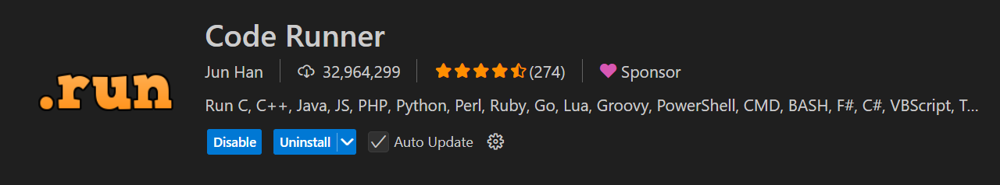
Key Features:
- Run Code Instantly – Press Ctrl + Alt + N (or Cmd + Option + N on macOS) to execute the current file.
- Supports Multiple Languages – Works with Python, JavaScript, C++, Java, PHP, Go, and many more.
- Customizable Execution – You can modify the execution settings (like running commands, environment variables, etc.).
- Output in the Output Panel – Instead of running in the terminal, it displays the output in the "OUTPUT" panel by default.
- Execute Selection – Highlight specific lines and run only the selected part.
- Auto Save Before Run – Can automatically save files before execution.
How to Use:
- Install Code Runner from the VS Code Extensions Marketplace.
- Open any script (e.g., script.py for Python).
- Run using:
- Ctrl + Alt + N (Windows/Linux) or Cmd + Option + N (Mac).
- Right-click → Run Code.
- Click the Play button in the top right corner.
- View the output in the OUTPUT tab.
Best Use Cases:
- Quickly testing small code snippets.
- Running scripts without setting up debugging.
- Learning new programming languages fast.
2. Tabine:
Tabnine is an AI-powered code completion extension for VS Code that enhances developer productivity by providing intelligent code suggestions.
Key Features of Tabnine in VS Code
- AI-Based Code Completion – Provides context-aware suggestions, completing functions, variables, and even entire lines of code.
- Whole-Line & Full-Function Completion – Can predict entire lines or complete function implementations.
- Supports Multiple Languages – Works with JavaScript, TypeScript, Python, Java, C++, and many other languages.
- Private Code Training – Can learn from your specific codebase to provide better suggestions while maintaining privacy.
- Works Offline – Unlike some AI tools, Tabnine can run locally without sending data to external servers.
- Integrates with GitHub Copilot – Can work alongside Copilot for enhanced code completion.
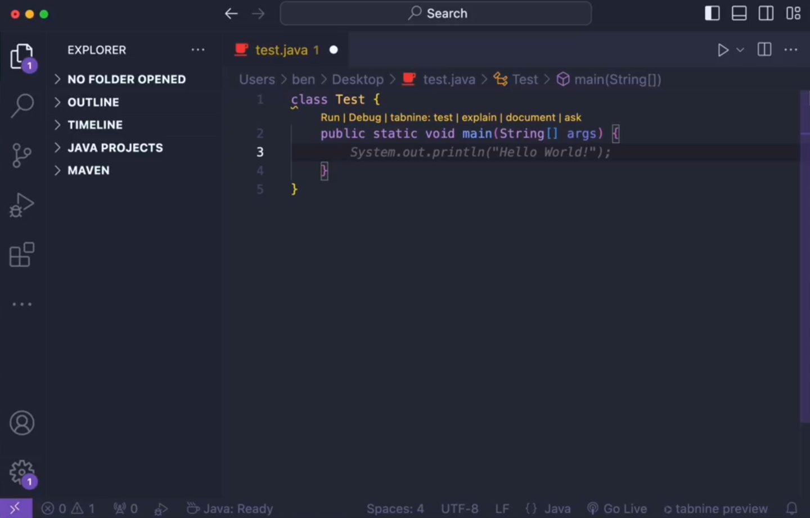
Installation & Setup in VS Code
- Open VS Code.
- Go to Extensions (Ctrl + Shift + X).
- Search for Tabnine and click Install.
- Once installed, restart VS Code.
- You can configure Tabnine settings by opening the Command Palette (Ctrl + Shift + P) and searching for Tabnine: Open Settings.
Customization
- You can adjust the AI model’s performance level.
- Enable/disable local vs. cloud-based AI models.
- Set up enterprise or team-based AI models for collaborative coding.
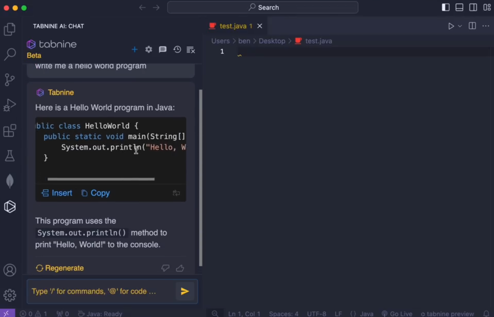
Comparison with GitHub Copilot:
| Feature |
Tabnine |
GitHub Copilot |
| AI Model |
Custom AI trained on your code (Pro version runs locally) |
OpenAI Codex (trained on public GitHub repos) |
| Code Completion |
Short & full-line completions (Pro version predicts entire functions) |
Full-line & entire function completions |
| Privacy |
Local AI model (Pro) – doesn’t send code online |
Sends code to OpenAI servers for processing |
| Language Support |
Supports most programming languages |
Best for JavaScript, Python, TypeScript, Go, Ruby, C++ |
| Performance |
Fast & lightweight, minimal CPU usage |
More powerful but can be resource-intensive |
| Context Awareness |
Learns from your project, integrates with your codebase |
More intelligent, understands complex logic better |
| Works Offline? |
Yes (Pro version) |
No (requires an internet connection) |
| Integration |
Works with VS Code, IntelliJ, WebStorm, PyCharm, etc. |
Mostly optimized for VS Code |
| Pricing |
Free (Basic) / $12 per month (Pro) |
$10 per month (Personal) / $19 per user (Business) |
| Best For |
Developers needing privacy & lightweight AI completion |
Developers who want powerful AI-driven coding suggestions |
Is Tabnine Worth Using?
- Best for developers who need privacy-conscious AI assistance.
- Good for teams that want a customizable AI assistant.
- Not as aggressive as GitHub Copilot but still useful for boosting coding efficiency.
-
3. Next JS/TS Snippets:
The Next.js/TS snippets extension provides useful code shortcuts to boost productivity while working with Next.js and TypeScript in VS Code.
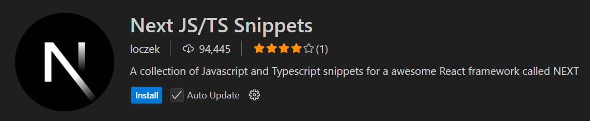
Installation
- Open VS Code.
- Go to Extensions (Ctrl + Shift + X).
- Search for "Next.js snippets" or "ES7+ React/Redux/React-Native snippets".
- Click Install.
- Restart VS Code.
| Snippet |
Expands to... |
| nextpage |
Next.js page with TypeScript (export default function Page() {}) |
| ncomp |
Functional component with TypeScript (FC<>) |
| useState |
const [state, setState] = useState() |
| useEffect |
useEffect(() => {}, []); |
| useRouter |
const router = useRouter(); |
| nextlink |
Link href="/about" |
| nexthead |
Head>title>Page Title /title> /Head> |
| nextimage |
image src="/image.png" width={100} height={100} |
| getServerSideProps |
Next.js SSR function (getServerSideProps) |
-
4. ES7+ React/Redux/React-Native snippets
The ES7+ React/Redux/React-Native snippets extension is a powerful tool for quickly generating boilerplate code for React, Redux, and React Native development.
Installation
- Open VS Code.
- Go to Extensions Marketplace (Ctrl + Shift + X).
- Search for ES7+ React/Redux/React-Native snippets.
- Click Install.
- Restart VS Code.
- React Component Snippets
| Shortcut |
Expands to... |
| rafce |
Functional component (arrow function) with export |
| rfc |
Functional component |
| rcc |
Class component |
| rsc |
Functional component with default export |
| rfce |
Functional component with named export |
| rpc |
Pure component |
| rpt |
PropTypes snippet |
React Hooks Snippets
| Shortcut |
Expands to... |
| usf |
useState Hook |
| uef |
useEffect Hook |
| uce |
useContext Hook |
| usm |
useMemo Hook |
| uscb |
useCallback Hook |
| usl |
useLayoutEffect Hook |
| usr |
useRef Hook |
React Router Snippets
| Shortcut |
Expands to... |
| rdom |
React Router BrowserRouter setup |
| rrd |
React Router < Route > |
| rrc |
React Router < Redirect > |
| rnrf |
React Native Router < Router > |
Redux & Redux Toolkit Snippets
| Shortcut |
Expands to... |
| rxslice |
Creates a Redux slice (Redux Toolkit) |
| rxaction |
Redux action |
| rxreducer |
Redux reducer |
| rxmapstate |
mapStateToProps |
| rxmapdispatch |
mapDispatchToProps |
React Native Snippets
| Shortcut |
Expands to... |
| rnstyle |
React Native StyleSheet |
| rns |
React Native Component |
| rnflatlist |
React Native FlatList |
| rntouch |
React Native TouchableOpacity |
-
5. GitHub Copilot
GitHub Copilot is an AI-powered coding assistant that helps you write code faster by suggesting entire functions, lines, and even comments based on context. It is powered by OpenAI Codex and integrates seamlessly into VS Code.
How to Install GitHub Copilot in VS Code
- Open VS Code.
- Go to Extensions Marketplace (Ctrl + Shift + X).
- Search for GitHub Copilot and click Install.
- Sign in to GitHub when prompted.
- Enable Copilot in your VS Code settings (File > Preferences > Settings).
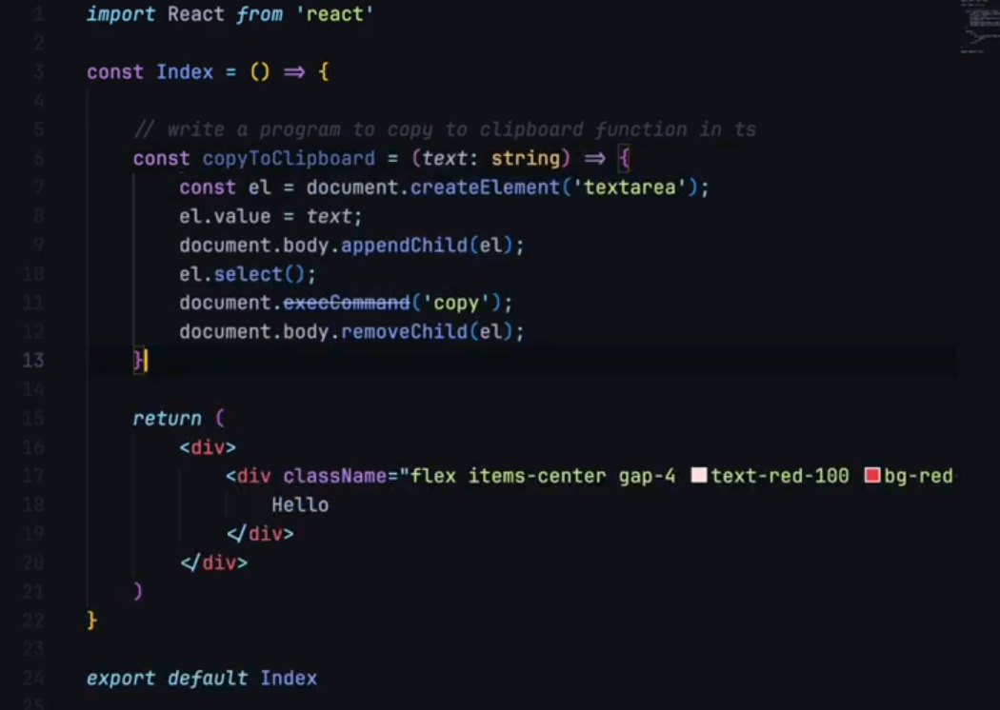
Key Features of GitHub Copilot:
- Autocomplete Code Suggestions – Predicts entire lines and functions.
- Comment-Based Code Generation – Write a comment, and Copilot generates the code.
- Supports Multiple Languages – Works with JavaScript, TypeScript, Python, Go, Java, C++, etc.
- Code Explanation & Refactoring – Helps understand existing code and suggest improvements.
- Context-Aware AI – Learns from your coding patterns and project structure.
-
6. Error Lens
Error Lens is a powerful VS Code extension that enhances error and warning visibility by highlighting issues directly in the editor instead of just showing them in the Problems panel.
Key Features of Error Lens:
- Inline Error/Warning Messages – Shows errors/warnings next to the code instead of at the bottom.
- Customizable Styling – Adjust colors, opacity, and font styles.
- Highlights Unused Variables – Helps detect unused imports, variables, or functions.
- Works with ESLint, TypeScript, Python, etc. – Supports multiple languages and linters.
- Quick Fix Suggestions – Hover over errors for fixes.
How to Install Error Lens in VS Code
- Open VS Code.
- Go to Extensions Marketplace (Ctrl + Shift + X).
- Search for "Error Lens".
- Click Install.
- Restart VS Code (optional but recommended).
How to Use Error Lens
- After installation, errors and warnings will be displayed inline with your code.
- Hover over an error to see a detailed message and quick fix.
- Use "Quick Fix" (Ctrl + .) to apply suggested fixes automatically.
-
7. Auto Rename Tag
The Auto Rename Tag extension in VS Code automatically renames the closing HTML/JSX/XML tag when you rename the opening tag, and vice versa.
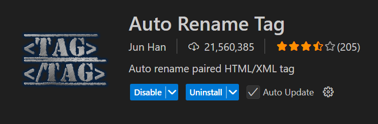
Key Features:
- Auto-renames paired tags in HTML, JSX, XML, and Vue files.
- Works with multiple cursors – Rename multiple tags at once.
- Lightweight and fast – No performance lag.
- Works in JSX (React/Next.js) – Automatically renames
→
inside JSX components.
- Compatible with Emmet & Prettier – No conflicts with other extensions.
How to Install Auto Rename Tag in VS Code
- Open VS Code.
- Go to Extensions Marketplace (Ctrl + Shift + X).
- Search for "Auto Rename Tag" (by Jun Han).
- Click Install.
- Restart VS Code (optional).
-
8. Jest:
Jest is a JavaScript testing framework designed for simplicity, performance, and support for projects using React, Node.js, TypeScript, and more. It is widely used for unit and integration testing.
Key Features of Jest
- Zero Configuration – Works out of the box with minimal setup.
- Fast & Parallel Execution – Runs tests in parallel to speed up performance.
- Built-in Coverage Reports – Generates test coverage reports without extra setup.
- Snapshot Testing – Captures UI component snapshots for regression testing.
- Mocks & Spies – Easily mock functions, modules, and APIs.
- Works with React, Next.js, TypeScript, Babel, and Node.js.
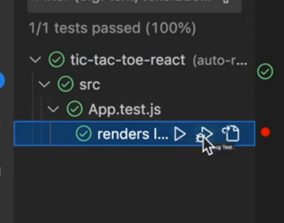
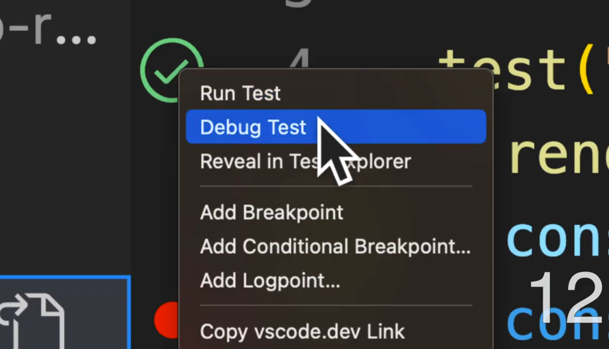
How to Install Jest
For JavaScript Projects (Node.js, React, Vue, etc.)
Run the following command:
npm install --save-dev jest
Or, for Yarn:
yarn add --dev jest
For TypeScript Projects
Install Jest along with TypeScript support:
npm install --save-dev jest ts-jest @types/jest
-
9. GitLens — Git supercharged
GitLens is a powerful Git extension for VS Code that enhances Git capabilities, making it easier to understand, navigate, and optimize code changes.
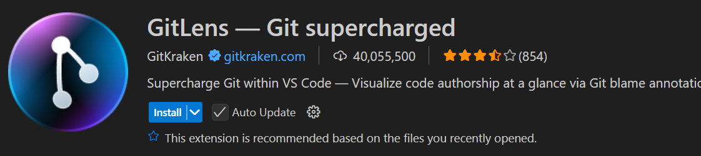
Key Features of GitLens
- Git Blame – See who last modified a line and when.
- Inline Annotations – View commit history directly in the editor.
- Rich History View – Explore commit history, diffs, and file changes.
- Powerful Commit Search – Search commit messages, authors, and files.
- Code Lens & Heatmaps – Highlight recent and frequent changes.
- Seamless Integration with GitHub, GitLab & Bitbucket.
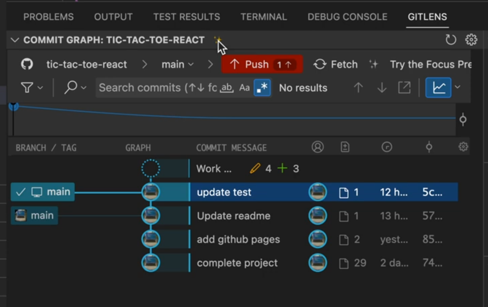
How to Install GitLens in VS Code
- Open VS Code.
- Go to Extensions Marketplace (Ctrl + Shift + X).
- Search for "GitLens" (by GitKraken).
- Click Install.
- Restart VS Code (optional but recommended).
How to Use GitLens in VS Code
-
View Git Blame (Who Changed This Line?)
Hover over any line of code to see:
- The author of the last change.
- The commit message.
- The timestamp.
Shortcut: Ctrl + Shift + G B (Windows/Linux) or Cmd + Shift + G B (Mac).
View Commit History of a File
- Right-click on a file in Explorer.
- Select "Open File History".
- View the list of commits affecting that file.
Shortcut: Alt + Shift + H (Windows/Linux) or Option + Shift + H (Mac).
-
View Line & File History
- Line History: GitLens: Show Line History (Ctrl + Shift + P, search for this command).
- File History: GitLens: Show File History in the Command Palette.
-
Explore Repo History & Branches
- Click on the GitLens View (left sidebar).
- See all branches, commits, and stashes in one place.
- Compare branches, files, and commits directly inside VS Code.
-
Git Diffs & Code Lens
- View inline diffs between file versions.
- Click "Compare with Previous" to see what changed.
- Enable CodeLens for insights on code frequency.
Shortcut: Ctrl + Shift + P → Search "GitLens: Toggle File Blame".
-
10. Git History
Git History is a VS Code extension that provides an easy way to view commit history, diffs, branches, and contributors directly within the editor.
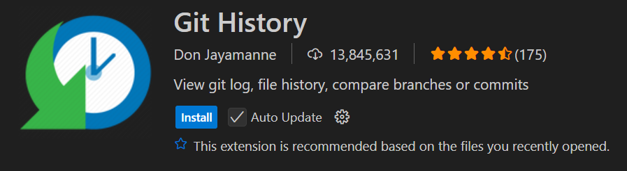
Key Features of Git History
- View commit history of a file or entire repository.
- Compare commits and branches visually.
- Search commit messages, authors, and file changes.
- View detailed commit diffs within VS Code.
- Navigate through previous versions of a file.
- Blame feature – See who last modified a line.
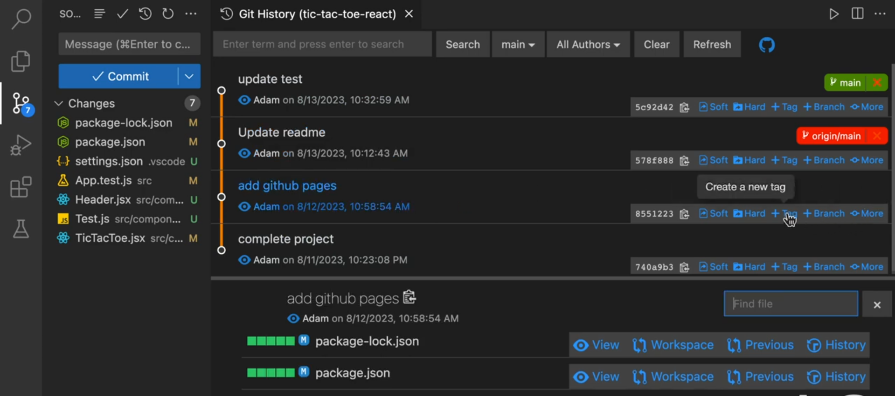
How to Install Git History in VS Code
- Open VS Code.
- Go to Extensions Marketplace (Ctrl + Shift + X).
- Search for "Git History" (by Don Jayamanne).
- Click Install.
- Restart VS Code (optional but recommended).
How to Use Git History in VS Code
-
View the Commit History of a Repository
- Open the Command Palette (Ctrl + Shift + P / Cmd + Shift + P on Mac).
- Search for "Git: View History (git log)".
- A new tab opens, displaying the commit history of the repository.
-
View the Commit History of a File
- Right-click on a file in Explorer.
- Select "Git: View File History".
- View all commits that modified this file.
Shortcut: Alt + Shift + H (Windows/Linux) or Option + Shift + H (Mac).
-
Compare Commits
- Open the commit history.
- Click on any two commits.
- View the side-by-side diff inside VS Code.
-
View File Blame (Who Changed This Line?)
- Open a file and right-click on any line.
- Select "Git: View Line History".
- It will show the commit that last modified that line.
-
Search for a Specific Commit
- Open the Git History view.
- Use the search bar to filter commits by author, message, or file name.
-
11. Git Graph
Git Graph is a visual Git tool for VS Code that provides a graphical representation of branches, commits, and merges in your repository. It simplifies commit history tracking and makes branching workflows more intuitive.
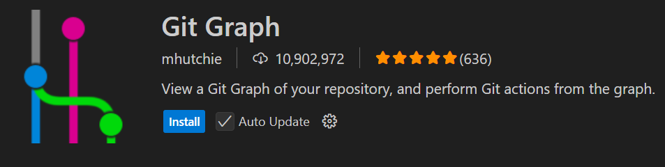
Key Features of Git Graph
- Visual Graph View – See all branches, commits, and merges in an interactive graph.
- Real-Time Updates – Changes appear instantly when new commits are made.
- Compare Commits & Branches – View differences side-by-side.
- Checkout & Create Branches – Easily switch between branches or create new ones.
- Inline Commit Details – See author, date, and message for each commit.
- Stash, Cherry-Pick, Revert, and Reset Commits – Perform advanced Git operations.
- Works with Local & Remote Repositories – Push, pull, and fetch with a single click.
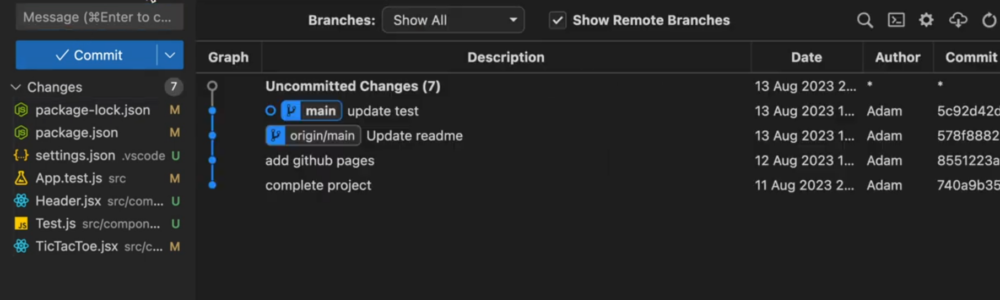
How to Install Git Graph in VS Code
- Open VS Code.
- Go to Extensions Marketplace (Ctrl + Shift + X).
- Search for "Git Graph" (by mhutchie).
- Click Install.
- Restart VS Code (optional but recommended).
How to Use Git Graph in VS Code
-
Open Git Graph
- Open the Command Palette (Ctrl + Shift + P / Cmd + Shift + P on Mac).
- Search for "Git Graph: View Git Graph".
- A new panel opens, displaying the interactive commit graph.
Or, click on the Git Graph icon in the Activity Bar (left sidebar).
Explore Commit History in Graph View
- View all commits, branches, and merges in a visual format.
- Click on any commit to see details, diffs, and changes.
- Hover over commits to see commit messages, authors, and timestamps.
-
Checkout or Create Branches
- Right-click on any branch in the graph.
- Choose "Checkout Branch" to switch to it.
- Or, select "Create Branch" to start a new branch from that point.
-
Compare Branches & Commits
- Select two commits to see the diff between them.
- Use "Compare Commits" to track file changes over time.
-
Push, Pull, Fetch & Merge
- Right-click on a branch to push, pull, fetch, or merge changes.
- Resolve merge conflicts easily with built-in tools.
-
Stash, Revert, Reset & Cherry-Pick Commits
- Stash Changes – Save uncommitted changes without committing.
- Revert Commits – Undo changes while keeping commit history.
- Reset Branch – Move a branch pointer to a specific commit.
- Cherry-Pick Commits – Apply specific commits from one branch to another.
-
12. Draw.io
The Draw.io Integration extension in VS Code allows you to create, edit, and view diagrams directly within the editor. It is useful for designing flowcharts, ER diagrams, UML diagrams, network diagrams, and more.
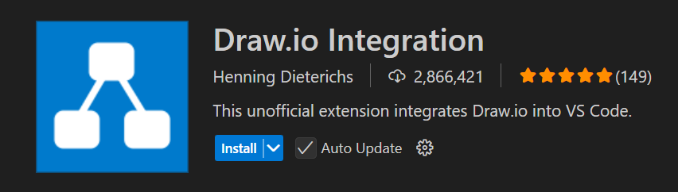
Key Features:
- Create & Edit Diagrams – Supports flowcharts, UML, ERD, and more.
- Save as Multiple Formats – Exports as .png, .svg, .xml, or .pdf.
- Version Control Friendly – Stores diagrams in .drawio or .xml format, making them Git-friendly.
- No External Software Needed – Works entirely within VS Code.
- Drag-and-Drop Interface – Easy to use with built-in shapes and connectors.
- Supports Dark Mode – Adapts to your VS Code theme.
How to Install Draw.io in VS Code
- Open VS Code.
- Go to the Extensions Marketplace (Ctrl + Shift + X).
- Search for "Draw.io Integration".
- Click Install.
- Open a new file with a .drawio or .drawio.svg extension to start editing.
How to Use Draw.io in VS Code
-
Create a New Diagram
- Click File > New File and save it with .drawio or .drawio.svg.
- Alternatively, right-click in the Explorer panel and select "New File", then name it diagram.drawio.
-
Editing the Diagram
- Open the .drawio file.
- The Draw.io editor will appear within VS Code.
- Use the built-in shapes, connectors, and text tools.
-
Saving & Exporting
- Save the file in .drawio.xml format to maintain editability.
- Export as .png, .svg, or .pdf using File > Export As.
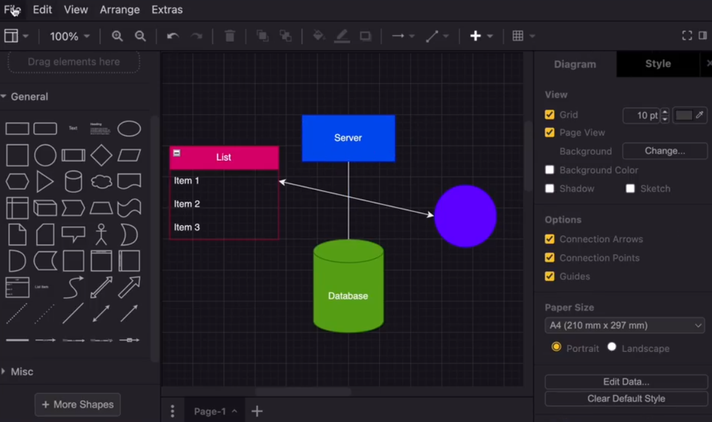
Best Use Cases:
- System Architecture Diagrams – Ideal for network and cloud infrastructure diagrams.
- UML Diagrams – Useful for class diagrams, sequence diagrams, and state machines.
- Database ER Diagrams – Helps in designing entity-relationship models for databases.
- Workflow & Flowcharts – Great for process documentation and algorithm visualization.
Limitations:
- No Real-Time Collaboration – Unlike online tools like Lucidchart, it lacks live collaboration.
- Limited Advanced Features – Some advanced Draw.io web version features may not work perfectly in VS Code.
-
13. Excel Viewer:
The Excel Viewer extension in VS Code allows you to open and view Excel files (.xls, .xlsx, and .csv) directly within the editor without needing external software like Microsoft Excel.
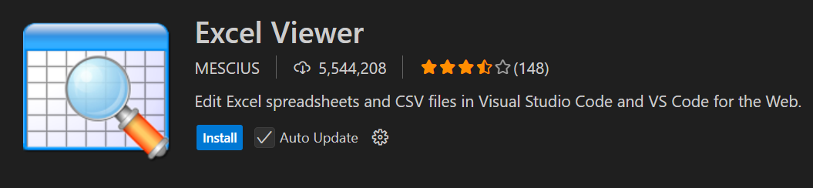
Key Features:
- View Excel Files – Open .xlsx, .xls, and .csv files in a tabular format.
- Search & Filter – Easily search for data and apply filters.
- Sort Columns – Sort columns by ascending or descending order.
- Supports Large Files – Works well with large datasets without lag.
- Read-Only Mode – Prevents accidental edits to the file.
- Lightweight – Faster and consumes fewer system resources than opening Excel in a separate application.
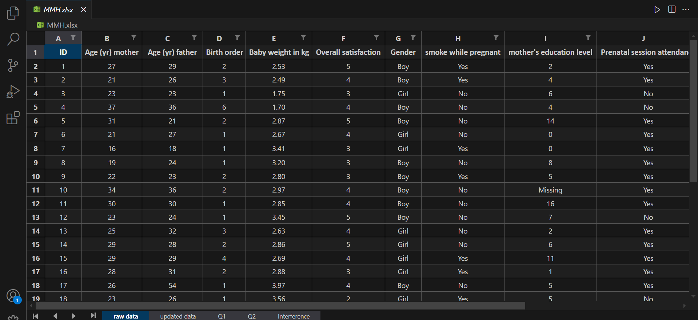
How to Install Excel Viewer in VS Code
- Open VS Code.
- Go to the Extensions Marketplace (Ctrl + Shift + X).
- Search for Excel Viewer.
- Click Install.
- Open an Excel file (.xls, .xlsx, or .csv), and it will automatically display in a table format.
Usage
- Open a .csv or .xlsx file in VS Code.
- The extension will display the data in a tabular format.
- Use the search bar to find specific values.
- Click on column headers to sort data.
- Right-click for additional options.
Limitations:
- No Editing – The extension is read-only; you cannot modify the Excel file directly.
- No Advanced Excel Features – It does not support formulas, pivot tables, or macros.
- Basic UI – Lacks advanced styling options compared to Excel.
Best Use Cases
- Quickly preview Excel files without opening a separate app.
- Checking .csv files before importing them into a database.
- Viewing large Excel datasets efficiently.
-
14. readme-preview
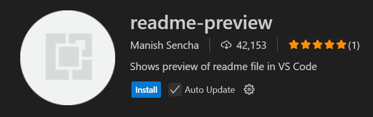
Key Features:
- Live Markdown Preview – View real-time changes while editing .md files.
- Supports GitHub Flavored Markdown (GFM) – Works with GitHub README formatting.
- Embedded Image & Link Support – Displays images and links correctly.
- Split View & Side-by-Side Mode – Edit Markdown on the left and preview on the right.
- Supports Tables, Lists, and Code Blocks – Renders all Markdown elements properly.
How to Install Readme Preview in VS Code
- Open VS Code.
- Go to Extensions Marketplace (Ctrl + Shift + X).
- Search for "Readme Preview".
- Click Install.
- Restart VS Code (if necessary).
How to Use Readme Preview
Method 1: Open the Built-in Markdown Preview
VS Code has a built-in preview for Markdown files.
- Open a .md file (e.g., README.md).
- Press Ctrl + Shift + V to open the preview.
- Alternatively, click "Open Preview" in the top-right corner of the editor.
Method 2: Side-by-Side Preview
- Open a .md file.
- Press Ctrl + K V to open the preview side-by-side with the editor.
-
15. Prettier
Prettier is a code formatter that helps maintain consistent code styling by automatically formatting your code in VS Code.
Key Features of Prettier
- Auto-formatting – Formats code on save or manually.
- Supports Multiple Languages – Works with JavaScript, TypeScript, HTML, CSS, JSON, Markdown, and more.
- Customizable Rules – Configure settings like indentation, line length, and quotes.
- Integrates with ESLint – Can work alongside ESLint for linting and formatting.
- Supports Pre-commit Hooks – Format code automatically before committing to Git.
How to Install Prettier in VS Code
- Open VS Code.
- Go to Extensions Marketplace (Ctrl + Shift + X).
- Search for "Prettier - Code formatter".
- Click Install.
- Restart VS Code (optional).
How to Use Prettier in VS Code
-
Format a File Manually
- Open a file (e.g., .js, .tsx, .json).
- Press Shift + Alt + F (Windows/Linux) or Shift + Option + F (Mac) to format.
- Alternatively, right-click and select "Format Document".
-
Enable Format on Save (Auto-Formatting)
- Go to VS Code Settings (Ctrl + ,).
- Search for "Format on Save".
- Enable "Editor: Format On Save".